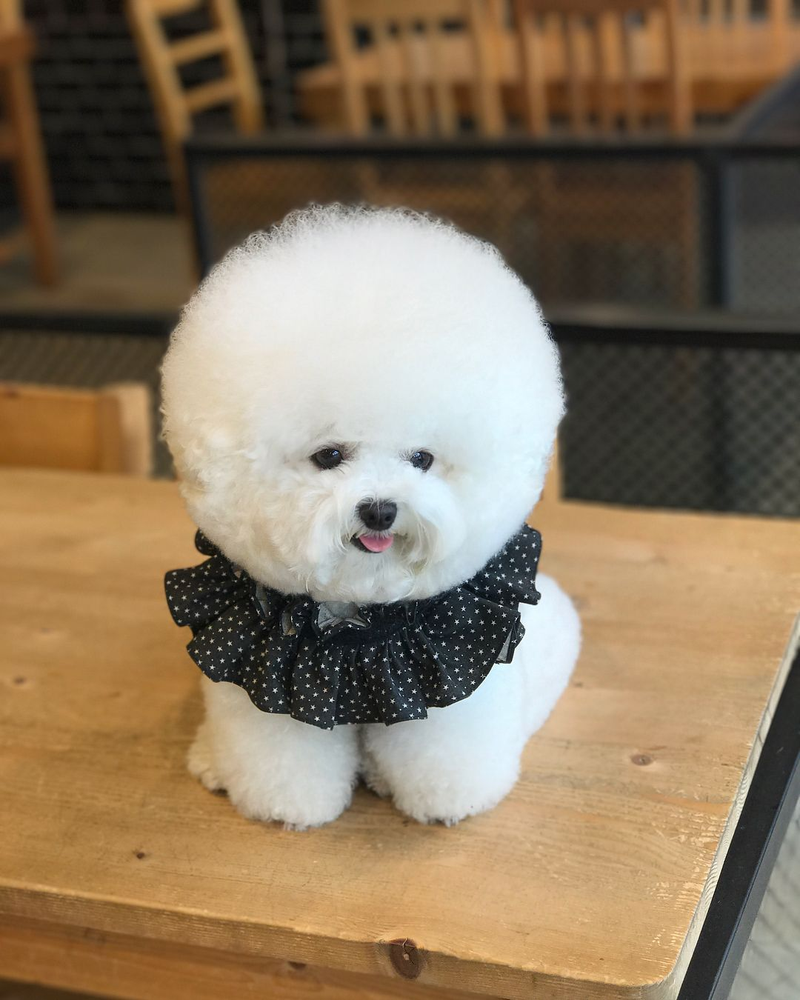

I love dogs and cats. (Tbh, love all the animals, besides humans (jk)) One day in my life, I am going to adapt a dog and a cat. I can't srsly wait for that moment!
Are you a cat person or dog person? What is your fav animal?
Let's go to Animal Rescue Website
This is a list of my favorite youtube channels related to cute animals. I hope these will make your day!
My recent fav youtube channel-1
My recent fav youtube channel-2
My recent fav youtube channel-3
My recent fav youtube channel-4
